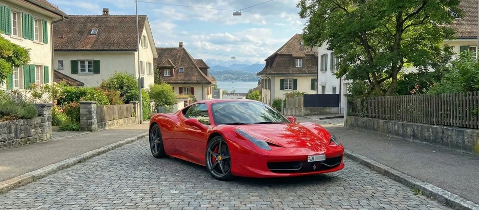

Ferrari 458 Italia Driving Experience in Switzerland
A practical guide to driving the Ferrari 458 Italia from the Zurich region: choosing a route, preparing for the handover and making time for the scenery.

A Ferrari 458 Italia driving experience in Switzerland combines the character of a naturally aspirated V8 with a choice of lakeside, countryside and mountain roads. Starting in the Zurich region, the practical question is how to match the route to your available time, the season and your familiarity with the car.
Luxury Obsession is based in Nänikon, near Uster. This guide explains how to plan the day around a Ferrari 458 Italia rental, from the first enquiry to the return. For current packages and conditions, use our Ferrari rental prices and booking details.
Why choose the Ferrari 458 Italia?
The 458 Italia combines a mid-mounted, naturally aspirated V8 with a two-seat coupé layout and paddle-operated transmission. Its engine response, sound and low driving position are central to the experience. You do not need a demanding mountain itinerary to appreciate those characteristics: a well-chosen country road leaves room to get comfortable with the car.
Our Ferrari 458 Italia model guide explains the engine, design and background in more detail. For a first drive, the priority is a manageable route with clear visibility, suitable stopping places and enough time for the return.

When to plan a Ferrari drive in Switzerland
Lower-altitude roads around Zurich and Lake Zurich offer an alternative to a full Alpine trip. In spring and autumn, build flexibility into the plan: weather and temperatures can change, especially as the route gains altitude. In summer, allow for weekend traffic and busy viewpoints.
High mountain passes are seasonal. A date in the calendar does not guarantee an open road or suitable driving conditions. Check the route shortly before departure and keep a lower-altitude alternative. In winter, discuss availability and conditions with us before planning a drive; do not assume that an Alpine itinerary is possible.

Booking and preparing for your drive
Start with the date, rental duration and the kind of day you want: a short scenic outing, a celebration or a longer road trip. Then compare the package with the distance you intend to cover. A route that fits on a map may still be too ambitious once traffic, breaks and the handover are included.
- Check the current driver eligibility and licence requirements.
- Confirm included kilometres, additional kilometre charges, deposit and insurance excess.
- Agree the pickup location, return time and any requested delivery arrangements.
- Allow time for the vehicle briefing and a relaxed first section of road.
Our guide to driving a Ferrari for the first time in Zurich covers preparation and the first kilometres. Refer to the confirmed rental terms for the conditions that apply to your booking.
Ferrari route ideas from Zurich
Pfannenstiel and Meilen: countryside and Lake Zurich
For a shorter outing, explore our Ferrari 458 route around Pfannenstiel and Meilen. It offers inspiration for combining countryside roads with a lakeside stop, without building the day around a distant Alpine destination. Choose stops where parking is permitted and the car can be positioned safely.
Klausen Pass: a longer mountain itinerary
Our Ferrari 458 Klausen Pass drive from Zurich shows a different kind of day, with mountain roads and more time devoted to the journey. Plan it around confirmed pass access and suitable weather, including the distance back to the return location. Avoid adding several passes simply to fill the itinerary.
For either route, treat driving time as only one part of the day. Stops, traffic and changing conditions need space in the schedule; the agreed return time remains the reference.

What to expect at the handover
Bring the documents required in your booking confirmation and footwear that allows precise pedal control. Before departure, take time to understand the seating position, mirrors, controls, transmission and parking procedure. Ask about anything unfamiliar before joining traffic.
Begin with a straightforward section of road. Keep inputs smooth, follow posted speed limits and leave room for cyclists, pedestrians and other traffic. Photo stops should be planned at suitable parking areas, rather than on narrow bends or road shoulders. Before returning, check the agreed fuel and return arrangements.
Frequently asked questions
Can I drive the Ferrari 458 Italia myself?
The rental is a self-drive experience, subject to the current driver eligibility and licence requirements. Confirm those requirements and the applicable rental terms before booking.
Where is Luxury Obsession based?
Luxury Obsession is based in Nänikon, near Uster in the Zurich region. Confirm the precise pickup location and any requested delivery arrangements when booking.
How much does the Ferrari 458 Italia experience cost?
The price depends on the chosen package and any agreed extras. Consult the current pricing page for duration, included kilometres and conditions, then request availability for your date.
Can I include a Swiss mountain pass?
A mountain route may be possible when the pass is open and conditions are suitable. Allow enough time and kilometres for the return journey, and keep an alternative route for changing weather.